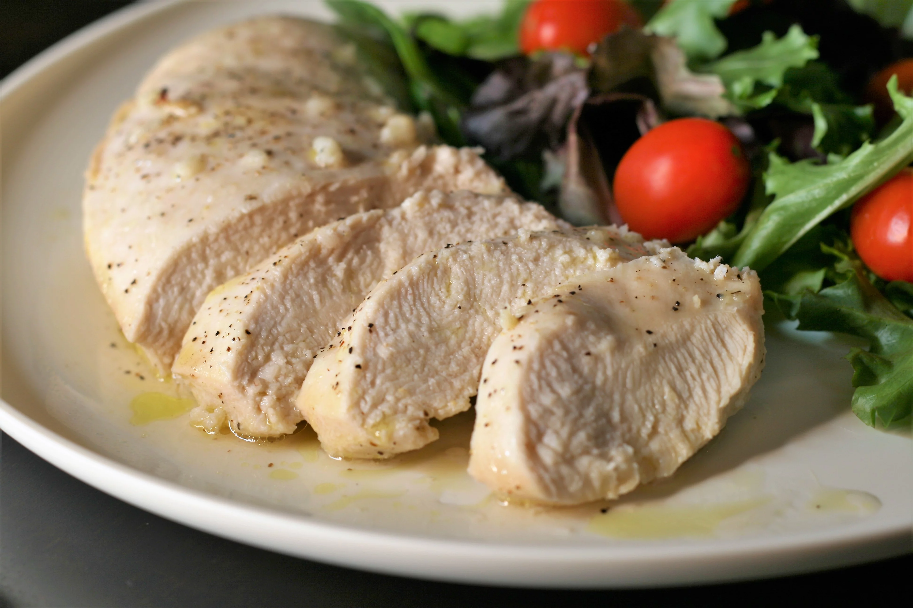

Garlic Chicken Breasts

Beautifully garnished Garlic Chicken Breast
Easy cooking at it's best. Boneless chicken seasoned to perfection and cooked just enough to be delicious. Nothing get's more attention at family gatherings than this dish. You will love how good this tastes!
Ingredients:
- 1/4 cup olive oil
- 1/4 cup lime juice
- 1 tablespoon minced garlic
- salt and ground black pepper to taste
- 2 skinless, boneless chicken breast halves
Steps:
- Mix olive oil, lime juice, garlic, salt, and black pepper in a bowl or resealable bag; add chicken. Marinate in the refrigerator, 3 hours to overnight.
- Preheat oven to 400 degrees F (200 degrees C).
- Transfer chicken from marinade to a shallow baking pan. Discard remaining marinade. Season chicken breasts with salt and black pepper.
- Bake in the preheated oven until no longer pink in the center and the juices run clear, 25 to 30 minutes. An instant-read thermometer inserted into the center should read at least 165 degrees F (74 degrees C).